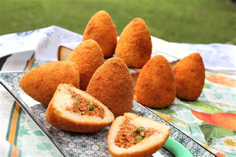
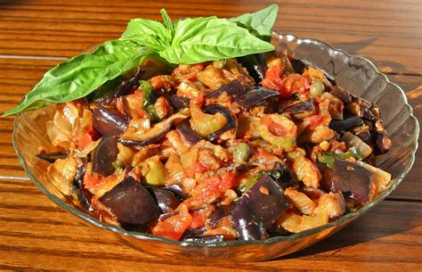
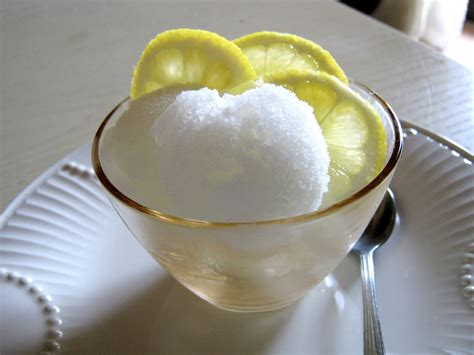
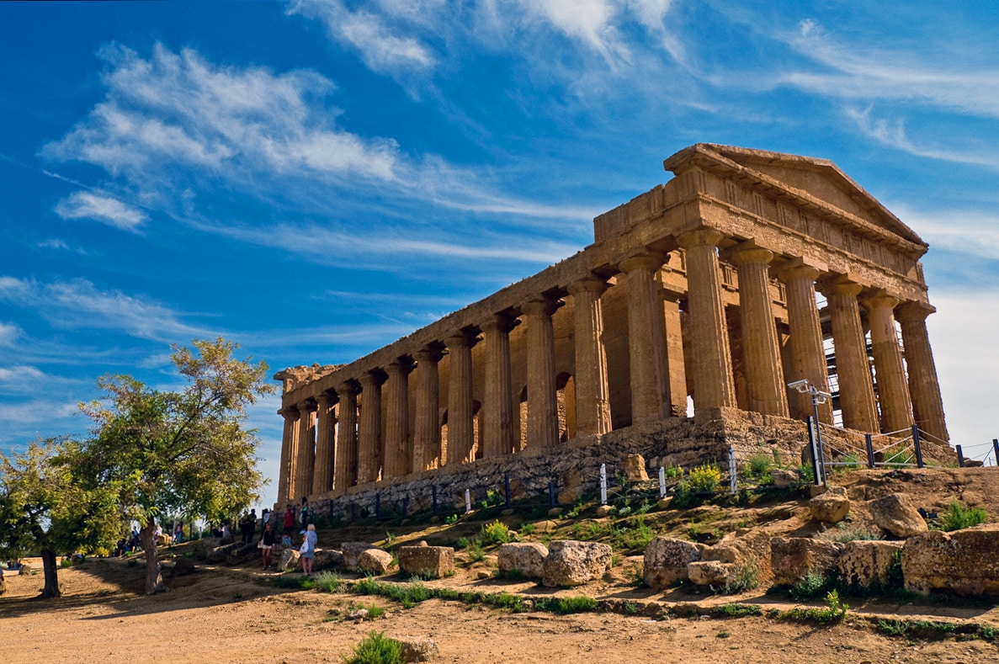
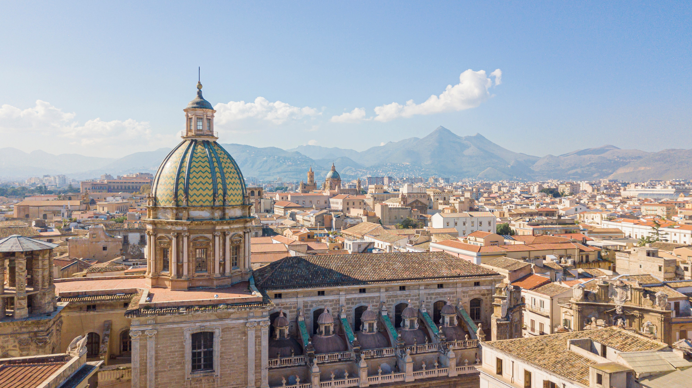
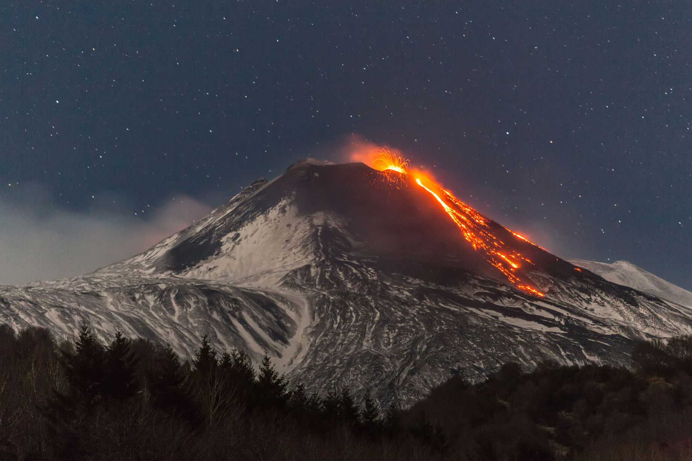
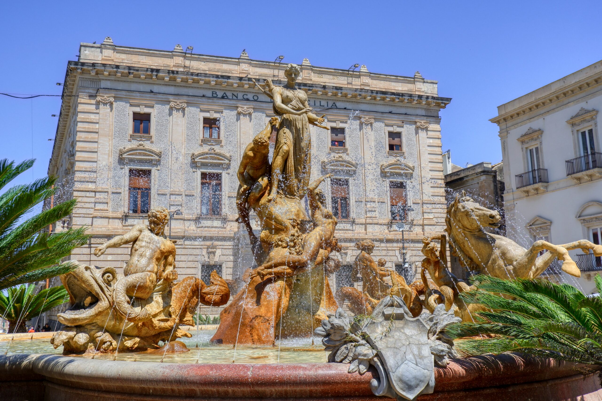

Sicilia
Panoramica
La Sicilia è la più grande isola del Mar Mediterraneo. Situata a sud dell’Italia, vanta una lunga storia influenzata da molte civiltà: greci, romani, arabi, normanni e altri.
Con paesaggi montuosi, spiagge splendide e il maestoso vulcano Etna, l’isola ha una cultura vivace e una cucina celebre.
Fatti in Breve
- Capoluogo: Palermo
- Lingua Regionale: Siciliano
- Popolazione: Circa 5 milioni
- Famosa per: Etna, storia antica, arte barocca, mercati
- Curiosità: L’Etna è il vulcano attivo più alto d’Europa!
Piatti Tipici
Arancini

Caponata

Cannoli

Granita

Luoghi Famosi
Valle dei Templi

Teatro di Taormina

Palermo

Etna

Syracuse

Quando Visitare
I mesi ideali sono aprile, maggio, settembre e ottobre. Offrono clima piacevole e meno affollamento rispetto all’estate, che può essere molto calda.
Simboli Regionali
- Bandiera:
- Emblema: